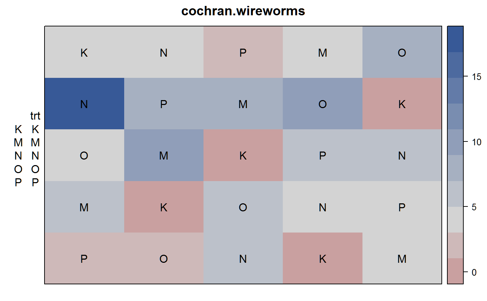
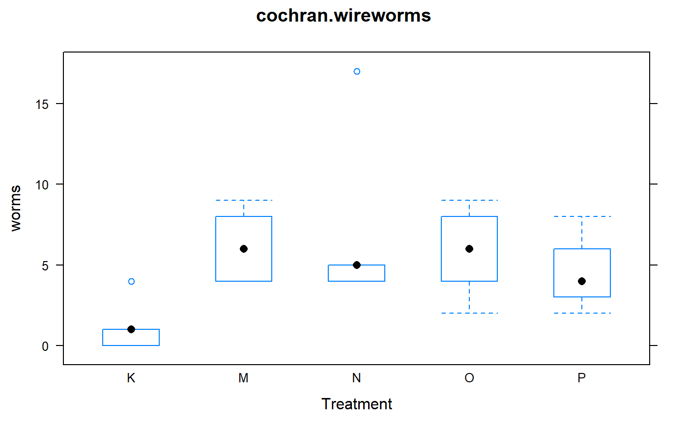

cochran.wireworms.RdWireworms controlled by fumigants in a latin square
A data frame with 25 observations on the following 4 variables.
rowrow
colcolumn
trtfumigant treatment, 5 levels
wormscount of wireworms per plot
Plots were approximately 22 cm by 13 cm. Layout of the experiment was a latin square. The number of wireworms in each plot was counted, following soil fumigation the previous year.
W. G. Cochran (1938). Some difficulties in the statistical analysis of replicated experiments. Empire Journal of Experimental Agriculture, 6, 157--175.
Ron Snee (1980). Graphical Display of Means. The American Statistician, 34, 195-199. https://www.jstor.org/stable/2684060 http://doi.org/10.1080/00031305.1980.10483028
W. Cochran (1940). The analysis of variance when experimental errors follow the Poisson or binomial laws. The Annals of Mathematical Statistics, 11, 335-347. https://www.jstor.org/stable/2235680
G W Snedecor and W G Cochran, 1980. Statistical Methods, Iowa State University Press. Page 288.
# \dontrun{ library(agridat) data(cochran.wireworms) dat <- cochran.wireworms libs(desplot) desplot(dat, worms ~ col*row, text=trt, cex=1, # aspect unknown main="cochran.wireworms")# Trt K is effective, but not the others. Really, this says it all. libs(lattice) bwplot(worms ~ trt, dat, main="cochran.wireworms", xlab="Treatment")# Snedecor and Cochran do ANOVA on sqrt(x+1). dat <- transform(dat, rowf=factor(row), colf=factor(col)) m1 <- aov(sqrt(worms+1) ~ rowf + colf + trt, data=dat) anova(m1)#> Analysis of Variance Table #> #> Response: sqrt(worms + 1) #> Df Sum Sq Mean Sq F value Pr(>F) #> rowf 4 2.3579 0.58947 1.8044 0.19285 #> colf 4 0.7787 0.19467 0.5959 0.67248 #> trt 4 5.7616 1.44041 4.4092 0.02014 * #> Residuals 12 3.9202 0.32668 #> --- #> Signif. codes: 0 '***' 0.001 '**' 0.01 '*' 0.05 '.' 0.1 ' ' 1# Instead of transforming, use glm m2 <- glm(worms ~ trt + rowf + colf, data=dat, family="poisson") anova(m2)#> Analysis of Deviance Table #> #> Model: poisson, link: log #> #> Response: worms #> #> Terms added sequentially (first to last) #> #> #> Df Deviance Resid. Df Resid. Dev #> NULL 24 64.555 #> trt 4 26.5294 20 38.026 #> rowf 4 15.6955 16 22.331 #> colf 4 2.8225 12 19.508# GLM with random blocking. libs(lme4) m3 <- glmer(worms ~ -1 +trt +(1|rowf) +(1|colf), data=dat, family="poisson") summary(m3)#> Generalized linear mixed model fit by maximum likelihood (Laplace #> Approximation) [glmerMod] #> Family: poisson ( log ) #> Formula: worms ~ -1 + trt + (1 | rowf) + (1 | colf) #> Data: dat #> #> AIC BIC logLik deviance df.resid #> 124.2 132.7 -55.1 110.2 18 #> #> Scaled residuals: #> Min 1Q Median 3Q Max #> -1.3342 -0.7364 -0.1740 0.4505 2.7797 #> #> Random effects: #> Groups Name Variance Std.Dev. #> rowf (Intercept) 8.389e-02 0.2896419 #> colf (Intercept) 1.451e-08 0.0001205 #> Number of obs: 25, groups: rowf, 5; colf, 5 #> #> Fixed effects: #> Estimate Std. Error z value Pr(>|z|) #> trtK 0.1393 0.4275 0.326 0.745 #> trtM 1.7814 0.2226 8.002 1.22e-15 *** #> trtN 1.9028 0.2142 8.881 < 2e-16 *** #> trtO 1.7147 0.2275 7.537 4.80e-14 *** #> trtP 1.4829 0.2463 6.020 1.74e-09 *** #> --- #> Signif. codes: 0 '***' 0.001 '**' 0.01 '*' 0.05 '.' 0.1 ' ' 1 #> #> Correlation of Fixed Effects: #> trtK trtM trtN trtO #> trtM 0.185 #> trtN 0.192 0.369 #> trtO 0.181 0.347 0.361 #> trtP 0.167 0.321 0.333 0.314## Fixed effects: ## Estimate Std. Error z value Pr(>|z|) ## trtK 0.1393 0.4275 0.326 0.745 ## trtM 1.7814 0.2226 8.002 1.22e-15 *** ## trtN 1.9028 0.2142 8.881 < 2e-16 *** ## trtO 1.7147 0.2275 7.537 4.80e-14 *** # }